본론에 들어가기 전에 지금 AI가 어디까지 왔는지, 오늘 무엇을 배우는지, 쓰기 전에 꼭 알아야 할 세 가지를 장표로 짚습니다.
대상 회사 경력사원
구성 5개 주제 · 장표 24장
도구 ChatGPT
다음 Page 1 · 프롬프트 엔지니어링
INTRO 01
지금, AI
기업 · 업종 · 이용자 · 유료
INTRO 02
무료와 유료
기능 차이 · 확인 실습
INTRO 03
오늘 배울 것
개발이 아니라 활용
INTRO 04
배워야 하는 이유
말 · 맡기기 · 격차
INTRO 05
꼭 알아야 할 3가지
확률 · 환각 · 보안
시작하기 전에
지난 일주일, AI에게 몇 번 물어보셨나요?
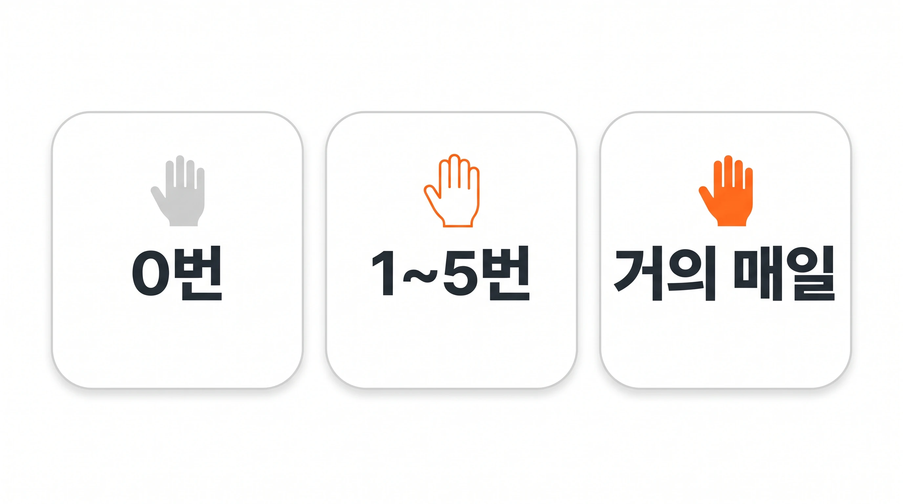
해당하는 곳에 손을 들어 주세요. 하나 더 — 지금 쓰는 계정은 무료인가요, 유료인가요?
INTRO 01
AI는 더 이상 트렌드가 아닙니다
지나가는 유행인지, 기본이 되는 중인지. 숫자로 먼저 봅니다.
INTRO 01 · 지금, AI
기업 10곳 중 9곳이 AI를 씁니다
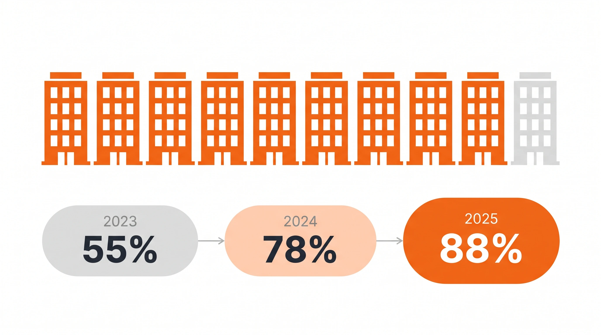
업무 하나 이상에 AI를 쓴다고 답한 조직의 비율입니다. 2년 만에 55%에서 88%가 됐습니다.
출처: McKinsey 「The State of AI」 2025년 조사 · Stanford HAI 「AI Index Report 2026」 4장 수록 · 전 세계 기업 응답자 설문
INTRO 01 · 지금, AI
IT 업종만의 이야기가 아닙니다
미국 사업체 조사에서 가장 낮은 숙박·음식업도 10곳 중 1곳이 AI를 씁니다. 전체 평균은 11개월 만에 17.3%에서 24.6%로 올랐습니다.
출처: 미국 통계국(U.S. Census Bureau) 사업체 동향 조사(BTOS) · 2026년 10월 5~18일 조사 · 표준오차가 큰 4개 업종은 제외
표로 보기
업종
AI를 쓴 사업체 비율
정보(IT·미디어)
46.4%
전문·과학·기술 서비스
43.8%
금융·보험
40.5%
교육
33.4%
부동산·임대
29.0%
보건·사회복지
27.6%
제조
22.9%
사업지원 서비스
22.7%
도매
21.4%
예술·여가
21.4%
소매
18.5%
건설
16.1%
기타 서비스
14.6%
운수·창고
13.5%
숙박·음식
10.7%
전체 평균
24.6%
INTRO 01 · 지금, AI
3년 만에 1억 명에서 12억 명으로
매주 ChatGPT를 쓰는 사람 수입니다. 2023년 11월 1억 명에서 2026년 10월 12억 명을 넘었습니다.
출처: OpenAI 공식 발표 11건(2023년 11월 ~ 2026년 10월) · 날짜는 달성일이 아니라 발표일
표로 보기
발표 시점
주간 이용자
2023년 11월
1억 명
2024년 8월
2억 명 이상
2024년 10월
2.5억 명 이상
2024년 12월
3억 명 이상
2025년 2월
4억 명 이상
2025년 3월
5억 명 이상
2025년 8월
7억 명 이상
2025년 10월
8억 명 이상
2026년 2월
9억 명 이상
2026년 8월
10억 명 이상
2026년 10월
12억 명 이상
INTRO 01 · 지금, AI
한국은 스마트폰 이용자 2명 중 1명
국내 ChatGPT 앱 월간 사용자는 2023년 8월 47만 명에서 2026년 10월 2,551만 명이 됐습니다.
출처: 와이즈앱·리테일(2026-11-10 발표 등) · 한국인 스마트폰 사용자 표본 추정 · 앱 사용자만 집계(PC 웹·회사 계정 제외) · ‘2명 중 1명’은 조사 모집단 5,139만 명으로 나눈 값(49.6%)
표로 보기
기준 월
월간 사용자(추정)
2023년 8월
47만 명
2023년 12월
147만 명
2024년 4월
235만 명
2024년 8월
407만 명
2024년 12월
682만 명
2025년 4월
1,748만 명
2025년 8월
2,031만 명
2025년 12월
2,224만 명
2026년 4월
2,345만 명
2026년 10월
2,551만 명
INTRO 01 · 지금, AI
돈을 내고 쓰는 사람도 늘었습니다
개인 유료 구독자는 1,550만 명에서 5,000만 명 이상으로, 업무용 유료 사용자는 100만 명에서 900만 명 이상으로 늘었습니다.
출처: OpenAI 공식 글(2026-02-27) · 업무용은 OpenAI 발표(2024년 9월 ~ 2026년 2월) · 개인 구독자의 2025년까지 수치는 The Information 보도 · 2026년 3월 이후 수치는 공개되지 않음
표로 보기
구분
시점
수치
근거
개인 유료 구독자
2024년 12월
1,550만 명
언론 보도
개인 유료 구독자
2025년 4월
2,000만 명
언론 보도
개인 유료 구독자
2025년 7월
3,500만 명
언론 보도
개인 유료 구독자
2026년 2월
5,000만 이상 명
OpenAI 공식 발표
업무용 유료 사용자
2024년 9월
100만 명
OpenAI 발표
업무용 유료 사용자
2025년 2월
200만 명
OpenAI 발표
업무용 유료 사용자
2025년 6월
300만 명
OpenAI 발표
업무용 유료 사용자
2025년 8월
500만 명
OpenAI 발표
업무용 유료 사용자
2026년 2월
900만 이상 명
OpenAI 발표
INTRO 02
무료와 유료, 무엇이 다른가
다들 쓰고, 돈까지 냅니다. 답이 더 똑똑해서일까요? 차이는 기능에 있습니다.
INTRO 02 · 무료와 유료
차이는 할 수 있는 일에서 납니다
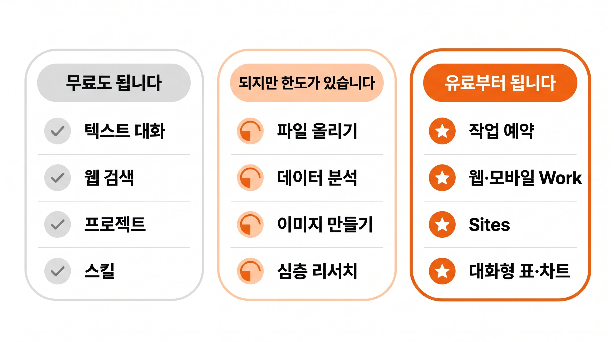
차이는 얼마나 똑똑한가가 아니라 무엇을, 얼마나 할 수 있는가입니다. 텍스트 대화는 무료도 횟수 제한이 없습니다.
출처: ChatGPT 요금제 안내의 플랜별 기능 비교(chatgpt.com/pricing) · 2026-11-13 확인 · 오른쪽 묶음은 Plus(월 29,000원) 기준
INTRO 02 · 무료와 유료
한눈에 보는 기능 차이
기능
무료
Go
Plus
월 요금
0원
13,000원
29,000원
무료도 됩니다
텍스트 대화
무제한
무제한
무제한
웹 검색 · 프로젝트 · 스킬
예
예
예
되지만 한도가 있습니다
파일 올리기 · 데이터 분석
제한적
예
예
이미지 만들기
제한적
예
예
심층 리서치
제한적
제한적
예
한 번에 읽는 분량
약 12쪽
약 40쪽
약 40쪽
Codex
체험
체험
한도 확대
플러그인
일부
예
예
Work · 여러 단계 작업
데스크톱 앱만
데스크톱 앱만
웹 · 모바일 포함
유료부터 됩니다
작업 예약
아니요
예
예
플러그인 만들기 · 공유
아니요
예
예
Sites · 대화형 표·차트
아니요
아니요
예
내 대화의 학습 활용
어느 요금제든 기본은 사용 · 설정에서 거부
ChatGPT 요금제 안내의 플랜별 기능 비교(chatgpt.com/pricing) 2026-11-13 확인 · 분량은 안내 페이지의 추정치 · 요금과 한도는 수시로 바뀝니다 · Pro는 생략
Go는 올리기 · 분석 · 예약이 풀리고, 맡기는 기능은 Plus부터 넓어집니다. 마지막 줄은 어느 요금제든 같습니다.
INTRO 02 · 무료와 유료
Codex · 스킬 · 플러그인, 무료에서도 열립니다
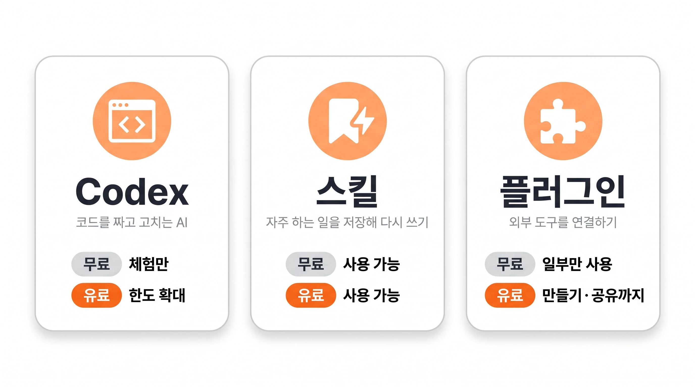
셋 다 무료 계정에서 열립니다. 다만 Codex는 체험 수준이고, 플러그인은 일부만 쓸 수 있으며 만들기와 공유는 유료부터입니다.
출처: ChatGPT 요금제 안내 · Codex 가격 안내 · 플러그인 안내(모두 2026-11-13 확인) · 스킬은 요금제 안내 기준 — 사이드바의 플러그인에서 내 계정을 확인
INTRO 02 · 무료와 유료
업무에 쓰면 여기서 막힙니다
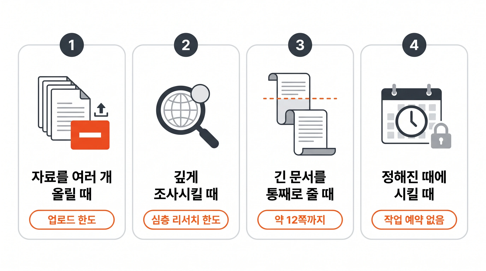
무료 계정은 도구마다 한도가 따로 있습니다. 한도에 닿으면 알림이 뜨고, 시간이 지나야 다시 쓸 수 있습니다.
출처: OpenAI 도움말 「ChatGPT Free Tier FAQ」(2026-11 수정) · ChatGPT 요금제 안내(2026-11-13 확인) · 횟수는 공개되어 있지 않아 화면에 표시되는 남은 횟수를 봅니다
INTRO 02 · 실습
기능 차이를 내 계정으로 확인합니다
메뉴를 견줍니다 — 사이드바의 플러그인과 입력창의 + 메뉴를 엽니다. 앞 화면(유료 계정)에는 있고 내 화면에는 없는 것을 찾습니다.
같은 부탁을 합니다 — 아래 문장을 복사해 새 채팅에 넣습니다.
말이 아니라 목록을 봅니다 — “예약했습니다”라는 답이 나왔더라도 예약 목록에 실제로 생겼는지 확인합니다. 만들어진 예약은 실습 뒤에 지웁니다.
PROMPT 0 — 매주 받아 보기
매주 월요일 오전 9시에, 지난 한 주 동안 나온 생성형 AI 업무 활용 소식 3가지를 각각 두 줄로 요약해서 알려 주세요.
무료 계정은 물어볼 때 답합니다. 유료 계정은 시켜 두면 정해진 때에 알아서 합니다.
출처: ChatGPT 요금제 안내의 플랜별 기능 비교(chatgpt.com/pricing) · 2026-11-13 확인 · 작업 예약: 무료 ‘아니요’, Go · Plus · Pro ‘예’
INTRO 03
오늘 무엇을 배우나
유료 계정만 있으면 잘 쓰게 될까요? 차이는 계정보다 쓰는 법에서 납니다.
INTRO 03 · 오늘 배울 것
개발이 아니라 활용을 배웁니다
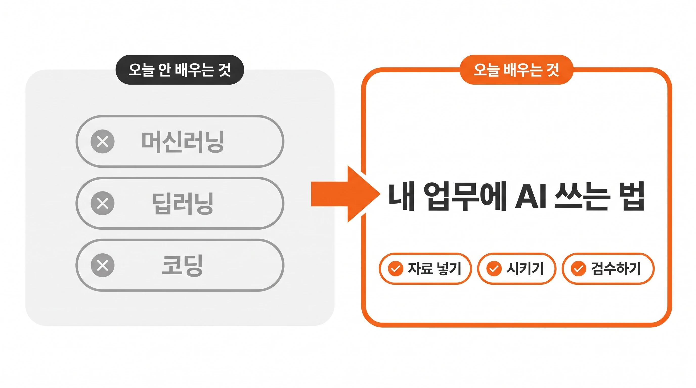
머신러닝 · 딥러닝 · 코딩은 다루지 않습니다. 내 자료를 넣고, 시키고, 검수하는 법을 다룹니다.
INTRO 03 · 오늘 배울 것
사람들은 AI를 매일 하는 일에 씁니다
한국 직장인이 AI 도움을 받는 일 1위는 정보 검색·요약, 2위는 문서 작성입니다. 코딩은 10명 중 1명이고, 쓰임새는 계속 넓어지고 있습니다.
출처: 한국은행 BOK 이슈노트 제2025-22호(2025-08) · 2025년 5~6월 취업자 5,512명 조사 중 업무에 AI를 쓴 사람 / 쓰임새 확대: OpenAI Signals(2026-10) · ChatGPT 업무 메시지에서 상위 10개 업무의 비중 56.0%(2025년 1분기) → 51.1%(2026년 3분기)
표로 보기
업무
응답 비율(1·2순위 합)
정보 검색·요약
62.2%
문서 작성·검수
38.6%
아이디어 생성
25.3%
데이터 분석·시각화
24.0%
통역·번역
21.7%
멀티미디어 제작·편집
15.4%
코딩
10.6%
외국어 학습
10.1%
고객 응대
8.8%
INTRO 03 · 오늘 배울 것
입력이 좋아지면 결과가 좋아집니다
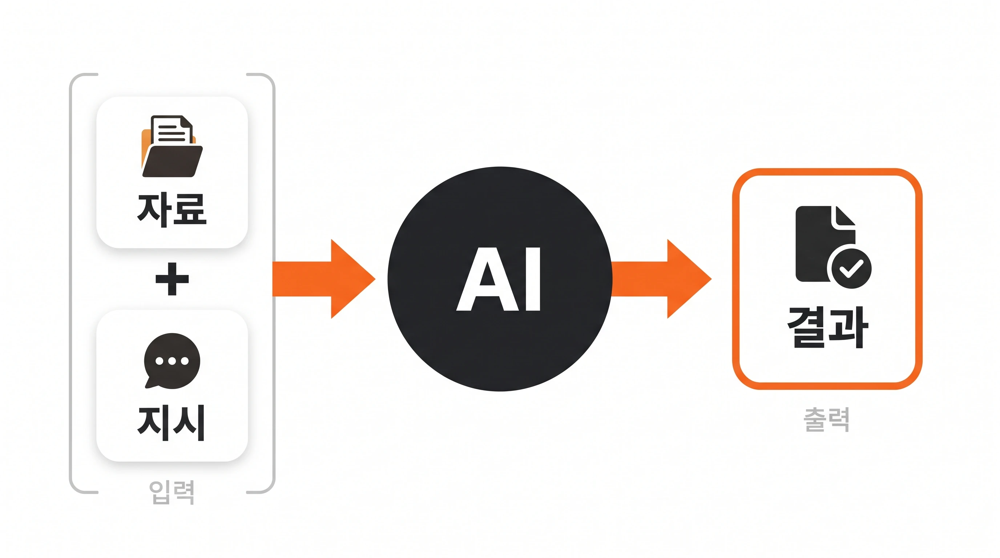
AI에게 줄 자료와 지시를 설계하는 일, 이것을 프롬프트 엔지니어링이라고 합니다.
INTRO 04
왜 지금 배워야 하나
쉬워서도, 유행이라서도 아닙니다. 일하는 방식이 바뀌고 있기 때문입니다.
INTRO 04 · 배워야 하는 이유 ①
코드가 아니라 말로 시킵니다
예전에는 이 표 하나를 얻으려면 코드를 알아야 했습니다. 지금은 한 문장이면 됩니다. 그래서 유리한 사람은 무엇이 필요한지 아는 사람, 곧 내 업무를 아는 사람입니다.
참고: 개인용 ChatGPT 메시지 가운데 코딩을 포함한 기술 도움은 4.6% · OpenAI Signals(2026-10-26 게시, 2026년 9월 메시지 기준) · 그림은 예시 화면
INTRO 04 · 배워야 하는 이유 ②
찾는 일에서 맡기는 일로
검색은 기사 링크를 찾아 주고, 읽고 정리하는 일은 내 몫이었습니다. AI에는 그 일까지 맡기고, 나는 출처를 확인합니다.
출처: 오픈서베이 「AI 검색 트렌드 리포트 2026 하반기」(2026년 7월 조사, 검색 서비스 이용자 981명) · 업무·학습 정보를 찾을 때 생성형 AI를 가장 먼저 여는 사람 36.5% · 전체 이용률 1위는 여전히 네이버(77.7%) · 그림은 가상의 회사와 기사로 만든 예시 화면
INTRO 04 · 배워야 하는 이유 ③
같은 도구, 다른 결과
똑같이 AI를 써도 결과는 갈립니다. 잘 쓰는 사람들의 습관은 시작하기 전에 AI가 할 일과 내가 할 일을 먼저 나누는 것입니다(53%, 그 외 33%).
출처: Microsoft 「2026 Work Trend Index」(2026-05 발표) · 10개국 AI 사용 지식근로자 20,000명 설문 · 자기 보고 · 한국 미포함
INTRO 04 · 배워야 하는 이유 ④
시장은 이 차이에 값을 매깁니다
AI 스킬을 요구하는 일자리는 전체보다 약 8배 빠르게 늘고 있고, 그런 일자리의 임금은 평균 62% 높았습니다.
출처: PwC 「2026 Global AI Jobs Barometer」(2026-06-15) · 채용공고 10억 건 이상 분석 · 임금 차이는 채용공고 기준이며 개발 직무 포함 / 국내: AI 활용 역량을 요구하는 채용공고 비중 0.37%(2024년) → 1.92%(2026년 1~9월) · 잡코리아(2026-10 보도)
INTRO 05
쓰기 전에 꼭 알아야 할 세 가지
AI가 답을 어떻게 만드는지, 어디서 틀리는지, 내 자료가 어디로 가는지.
INTRO 05 · 꼭 알아야 할 3가지 ① 확률
AI는 답을 꺼내지 않고, 다음 말을 고릅니다
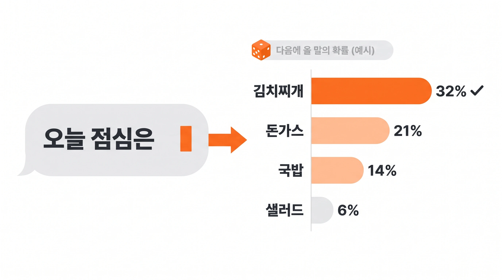
저장된 답을 찾아 꺼내는 것이 아니라, 다음에 올 말을 확률로 하나씩 골라 문장을 만듭니다. 그래서 같은 질문에도 답이 달라질 수 있습니다.
출처: OpenAI 도움말 「ChatGPT 및 파운데이션 모델 개발 방법」(2026-10 수정) · 그림의 확률은 설명용 예시
INTRO 05 · 꼭 알아야 할 3가지 ① 확률
조건을 주면 답이 좁혀집니다
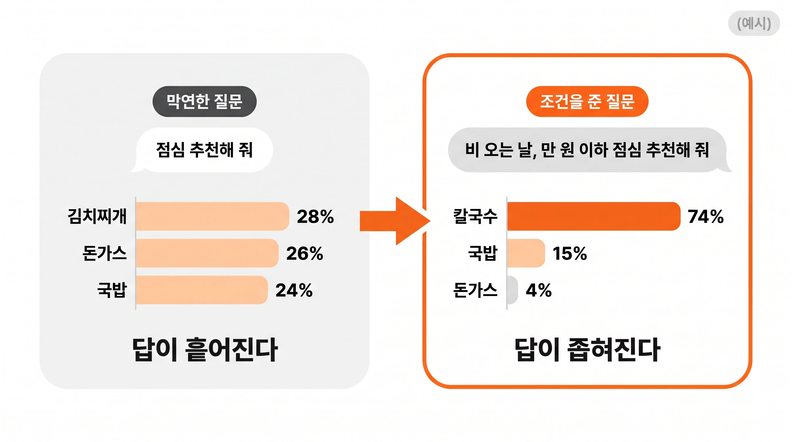
질문이 막연하면 가장 흔한 답이 나옵니다. 상황과 조건을 줄수록 내가 원하는 답에 가까워집니다.
그림의 확률은 설명용 예시
INTRO 05 · 꼭 알아야 할 3가지 ② 환각
AI는 그럴듯하게 틀립니다
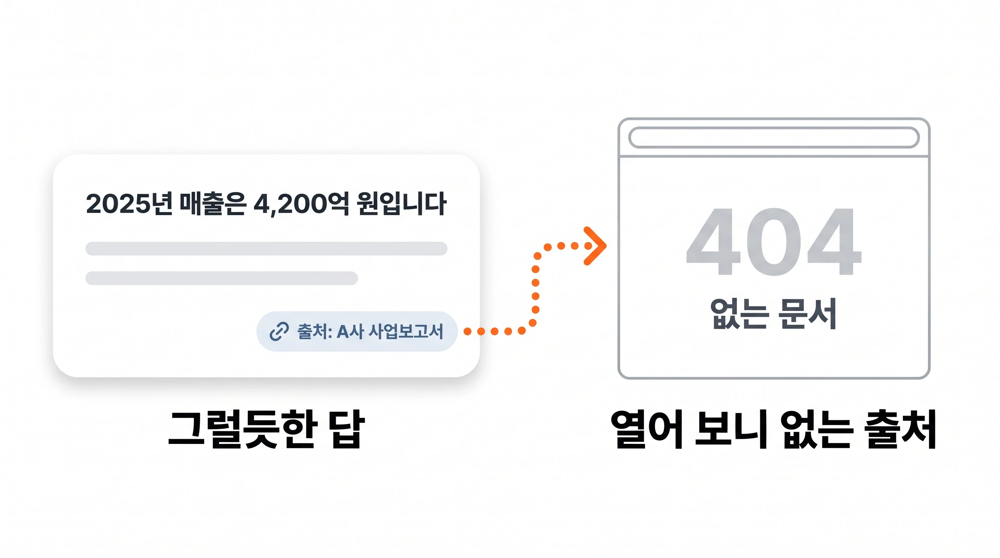
자료를 주고 요약만 시켜도, 최신 모델의 요약 100건 중 6~12건에는 원문과 어긋난 내용이 섞였습니다. 숫자 · 인용 · 출처는 원문을 확인합니다.
출처: Vectara Hallucination Leaderboard(2026-10-22 갱신) · GPT-6, Claude Opus 5.5, Gemini 4, GPT-5.6 측정 · 기사 7,700여 건 요약을 자동 판정 / 대법원 법관 설문(2026-11-02 발표, 360명 응답): 민사·가사·행정 담당 법관의 약 80%가 AI가 지어낸 판례가 인용된 서면을 받아 봄 · 법률신문 보도
INTRO 05 · 꼭 알아야 할 3가지 ③ 보안
내가 넣은 자료는 어디로 갈까
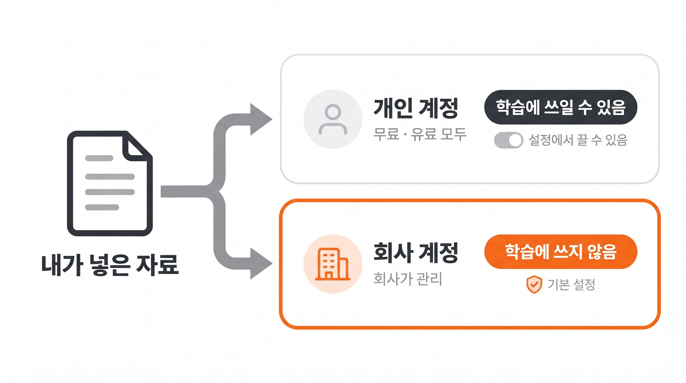
개인 계정은 무료든 유료든 기본 설정에서 대화가 학습에 쓰일 수 있고, 설정에서 끌 수 있습니다. 회사용 계정은 기본적으로 학습에 쓰지 않습니다.
출처: OpenAI 도움말 「ChatGPT의 데이터 제어」(2026-11 수정) · 「엔터프라이즈 개인정보 보호」(2026-01-08) · 끄는 길: 설정 → 데이터 제어 → ‘모두를 위한 모델 개선’
INTRO 05 · 꼭 알아야 할 3가지 ③ 보안
보안은 세 겹으로 지킵니다
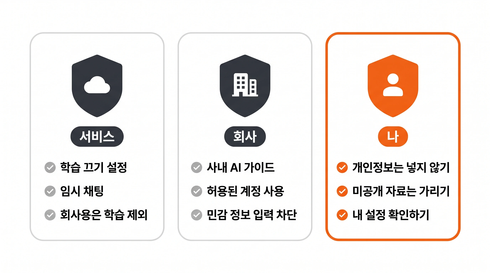
서비스와 회사가 장치를 두지만, 마지막 한 겹은 입력하는 나입니다. 주민번호 · 계좌 · 비밀번호와 미공개 자료는 처음부터 넣지 않습니다.
출처: 개인정보보호위원회 「생성형 AI 서비스 이용자를 위한 개인정보 보호 가이드」(2026-05-19) · Netskope 「Cloud and Threat Report 2026」: 기업 한 곳당 생성형 AI 데이터 정책 위반 월평균 223건(소스코드 42% · 규제 대상 데이터 32% · 지식재산 16%)
INTRO 05 · 정리
그래서, 세 가지 습관
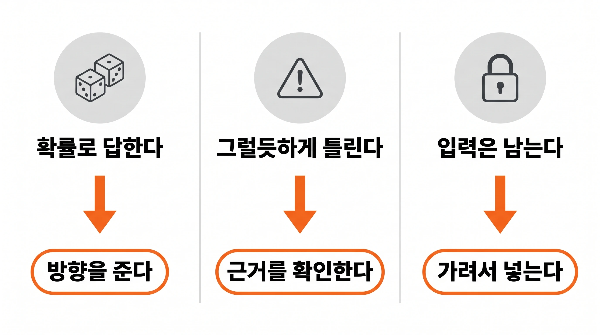
확률로 답하니 방향을 주고, 그럴듯하게 틀리니 근거를 확인하고, 입력은 남으니 가려서 넣습니다.